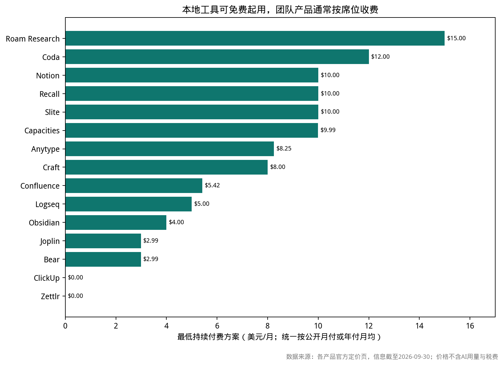

rustmd · HTML 笔记
HTML 页面渲染示例
左侧编辑源码，右侧由应用内置 WebView 整页渲染。这个页面没有使用任何外部框架： 排版、表格、代码块、图片和脚本都来自笔记自身，预览与 PNG / PDF 导出使用同一份文档。
- sandbox iframe
- 本地 CSS / JS
- 相对路径图片
- 无需 Edge / Chrome
页面样式
本页的主样式来自同目录的 assets/html-demo.css；下面这句红色提示来自
<head> 里的内联 <style>，两种样式都会在预览和导出中生效。
这一段是内联样式：.notice { color: crimson; }。
HTML 笔记不会套用 Markdown 预览的排版，也不会自动注入代码高亮。 页面长什么样，完全由笔记自己的 CSS 决定。
表格
带表头、边框和隔行底色的表格；样式同样写在 html-demo.css 里，
窄窗口下可以横向滚动。
| 能力 | Markdown | HTML | CSV / TXT / JSON |
|---|---|---|---|
| 右侧实时预览 | ✓ Markdown 渲染 | ✓ 整页原生渲染 | ✓ 表格 / 检查器 |
| 页面自带 CSS / JS | — | ✓ 沙盒内执行 | — |
| 本地相对图片 | ✓ | ✓ | — |
| PNG / PDF / HTML 导出 | ✓ | ✓ 整页 | ✓ |
第一列使用 <th scope="row">，表头使用
<th scope="col">，阅读器和导出工具都能理解表格结构。
代码块
代码块是普通的 <pre><code>：深色底、圆角和右上角的语言标签
都来自页面 CSS。应用不会给 HTML 笔记注入 highlight.js，需要语法色时可以由页面自行引入。
<section class="note">
<h2>Hello</h2>
</section>// 这段脚本在 sandbox iframe 中执行
document.body.dataset.scriptRan = 'yes-inline';
document.getElementById('inline-status').textContent = '内联脚本：已执行';本地图片
相对路径图片由 rmd 协议读取，预览和导出前都会内联为 data URL；
隐藏的导出 WebView 不会因为跨域请求而丢图。

脚本执行
页面脚本在 null origin 的 sandbox iframe 中运行，拿不到应用命令，但可以正常操作本页 DOM：
本地脚本：等待 内联脚本：等待 延迟脚本：等待
// assets/html-demo.js（经典脚本，内联后按原位置执行）
document.body.dataset.localScript = 'yes';
document.getElementById('local-status').textContent = '本地脚本：已执行';
// <head> 中带 defer 的脚本（内联后移到 <body> 末尾）
document.body.dataset.headDefer = 'body-ok';
document.getElementById('defer-status').textContent = '延迟脚本：已执行';导出
- PNG：整页长图，超长页面分段截图后拼接。
- PDF：系统 WebView 的打印管线，A4 矢量文字。
- HTML：按源码输出 UTF-8 文件；相对 CSS/JS/图片不随文件复制。